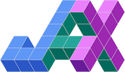
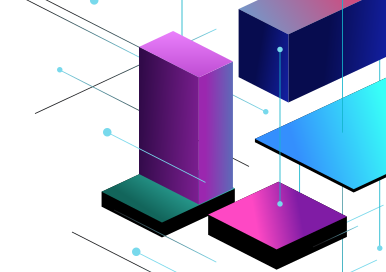

High performance array computing
JAX is a Python library for accelerator-oriented array computation and program transformation, designed for high-performance numerical computing and large-scale machine learning.

Familiar API
JAX provides a familiar NumPy-style API for ease of adoption by researchers and engineers.
Transformations
JAX includes composable function transformations for compilation, batching, automatic differentiation, and parallelization.
Run anywhere
The same code executes on multiple backends, including CPU, GPU, & TPU
If you’re looking to train neural networks, use Flax and start with its tutorials.
For an end-to-end transformer library built on JAX, see MaxText.
The JAX Ecosystem
JAX itself is narrowly-scoped and focuses on efficient array operations and program transformations. Built around JAX is an evolving ecosystem of machine learning and numerical computing tools; the following is just a small sample of what is out there:
Optimizers & solvers
Data loading
Checkpointing and model export
Probabilistic modeling
Physics & simulation
Miscellaneous tools
Many more JAX-based libraries have been developed; the community-run Awesome JAX page maintains an up-to-date list.